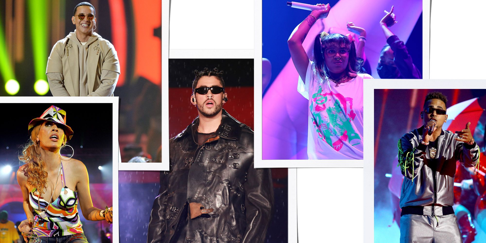

Bad Bunny
Bad Bunny
Bad Bunny in la playa

Bad Bunny in frount in his house

Bad Bunny is sitting in the chair in the sand
Reggaeton, also known as reggaetón and reggaetón, is a music style that originated as Reggae en Español in Panama during the late 1980s. and was later popularized in Puerto Rico. It has evolved from dancehall and has been influenced by American hip hop, Latin American, and Caribbean music.
Reggaeton uses traditional verse-chorus-bridge hip hop structure. Like hip hop, reggaeton songs have a hook which is repeated throughout the song. Latino ethnic identity is a common musical, lyrical and visual theme. Unlike hip-hop CDs, reggaeton discs generally do not have parental advisories.
Reggaeton, also known as reggaetón and reguetón, is a music style from Puerto *Rico that was influenced by Reggae en Español in Panama, Hip Hop, Dancehall, Bomba and Plena. It has evolved from dancehall and has been influenced by American hip hop, Latin American, and Caribbean music.
